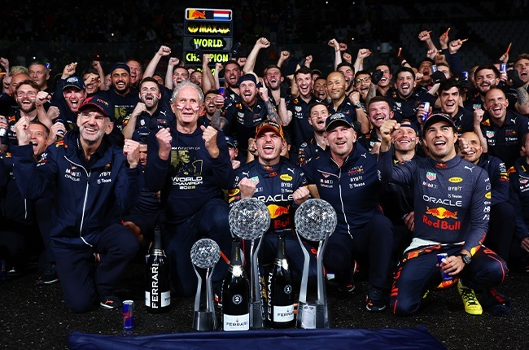

¿Que es la Formula 1?
El Campeonato Mundial de Fórmula 1, es la principal competición de automovilismo internacional y el
campeonato de
deportes de motor más popular y prestigioso del mundo. La entidad que la dirige es la Federación
Internacional del
Automóvil (FIA). Desde septiembre del 2016, tras la adquisición de Formula One Group, la empresa
estadounidense
Liberty Media es la responsable de gestionar y operar el campeonato.2

¿Como se puntua?
En la Fórmula 1, los pilotos ganan puntos según su posición en cada carrera. El primero recibe 25 puntos,
el segundo 18, y así sucesivamente hasta el décimo, que obtiene 1 punto. También hay un punto extra para el
piloto
que logre la vuelta más rápida, siempre que termine entre los diez primeros. Al final de la temporada, los
puntos
se suman para determinar el campeón de pilotos y constructores. Es una forma de reconocer la consistencia y
el
rendimiento a lo largo de varias carreras.
Ultimos ganadores del mundial de constructores
Los equipos ganadores del Campeonato de Constructores de la Fórmula 1 fueron los
siguientes:
2023: Red Bull Racing
2022: Red Bull Racing
2021: Mercedes
2020: Mercedes
2019: Mercedes
2018: Mercedes
2017: Mercedes
2016: Mercedes
2015: Mercedes
2014: Mercedes
2013: Red Bull Racing
2012: Red Bull Racing
2011: Red Bull Racing
2010: Red Bull Racing
Estos equipos lograron una consistencia y rendimiento excepcionales a lo largo de las temporadas
respectivas,
contribuyendo al desarrollo de los autos y al éxito conjunto en cada carrera para asegurar el título del
Campeonato de Constructores.

Ultimos ganadores del mundial de pilotos
Los ganadores recientes del Mundial de Pilotos de la Fórmula 1 fueron los siguientes:
2023: Max Verstappen (Red Bull Racing)
2022: Max Verstappen (Red Bull Racing)
2021: Max Verstappen (Red Bull Racing)
2020: Lewis Hamilton (Mercedes)
2019: Lewis Hamilton (Mercedes)
2018: Lewis Hamilton (Mercedes)
2017: Lewis Hamilton (Mercedes)
2016: Nico Rosberg (Mercedes)
2015: Lewis Hamilton (Mercedes)
2014: Lewis Hamilton (Mercedes)
2013: Sebastian Vettel (Red Bull Racing)
2012: Sebastian Vettel (Red Bull Racing)
2011: Sebastian Vettel (Red Bull Racing)
2010: Sebastian Vettel (Red Bull Racing)
Estos pilotos demostraron un rendimiento excepcional a lo largo de sus respectivas temporadas y se
consagraron
como campeones mundiales de la Fórmula 1.
Mencion honorifica - Pastor Maldonado
La carrera de Pastor Maldonado en la Fórmula 1 abarcó desde 2011 hasta 2015, destacándose por su victoria en
el Gran Premio de España de 2012 con el equipo Williams, donde sorprendentemente derrotó al entonces campeón
mundial, Fernando Alonso. Sin embargo, su carrera estuvo marcada por un estilo de conducción agresivo, dando
lugar a varias situaciones controvertidas y accidentes. Maldonado fue conocido por su participación en
colisiones y situaciones polémicas, siendo criticado por su comportamiento en pista. Una de las acciones más
destacadas fue su colisión con Lewis Hamilton en el Gran Premio de Europa de 2012, obligando a ambos pilotos
a abandonar la carrera. Estas controversias contribuyeron a la percepción de Maldonado como un piloto
talentoso pero propenso a situaciones arriesgadas en pista. Aunque no continuó en la Fórmula 1 después de
2015, dejó
una huella mixta en la memoria de los seguidores del automovilismo.
Añade tus pilotos favoritos
Aqui puedes crear una lista con tus pilotos favoritos.